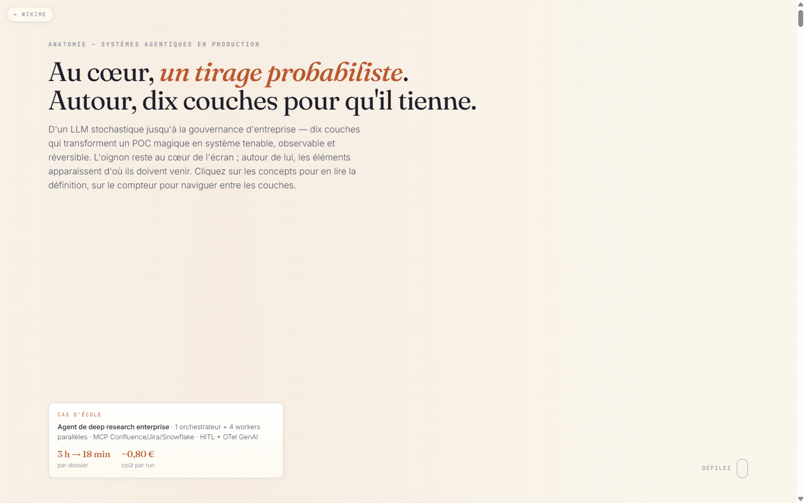
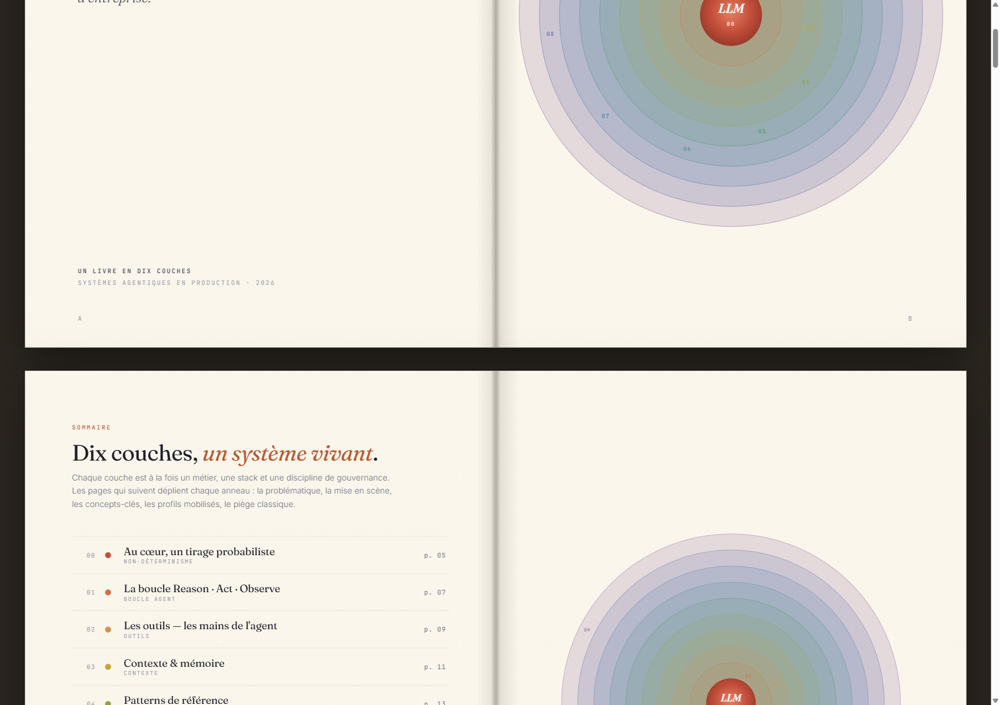

Trois manières d'entrer dans l'oignon
Choisissez → cliquez
01 · Scrollytelling

La scrollytelling immersive
Une page, un oignon au centre, dix anneaux qui s'allument au défilement. Concepts cliquables pour leurs définitions, HUD qui suit la couche active, compteur / sommaire intégré.
02 · Livre interactif

Le livre en dix couches
Dix-huit doubles pages façon ouvrage de bureau — couverture, sommaire, une couche par double-page, quatre planches schémas, colophon. Navigation clavier, sommaire cliquable, dernière page mémorisée.
03 · Édition papier

L'édition papier A4
Même maquette que le livre interactif, formatée pour l'impression A4 paysage — une double-page par feuille. Lance automatiquement la boîte de dialogue d'impression de votre navigateur.
Prévisualiser sans imprimer
book-print.html?noprint=1 →